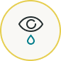
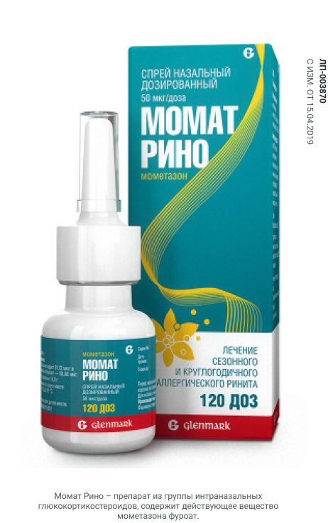

Момат Рино
Для лечения аллергического ринита
Оказывает противоаллергическое и противовоспалительное действие
Направлен на устранение симптомов аллергии:
Заложенность носа
Насморк

Слезотечение
Чихание
Боль и ощущение давления в области околоносовых пазух
Заложенность носа
Показания к применению: лечение сезонного и круглогодичного аллергического ринита у взрослых c 18 лет
